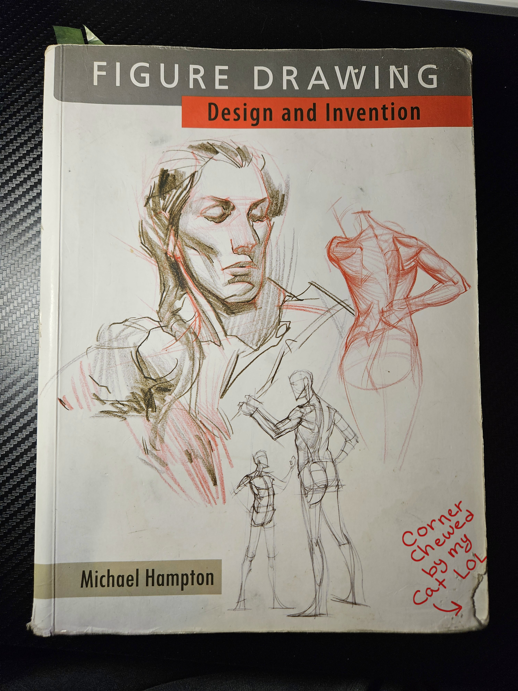

Learning Resources
Looking for helpful tools and tutorials to improve your drawing skills? You've come to the right place! Whether you're picking up a pencil for the first time or looking to practice something new, these resources can help guide you along your artistic journey.
Explore Drawing Resources
Below is a list of drawing resources I have personally used, and still use, to help develop my drawing skills. I hope they can do the same thing for you and help assist your artistic journey. I have listed a collection of beginner-friendly to intermediate drawing resources, inluding tutorials, practice tools, and educational websites and books. Compare their features to find the ones that work best for you!
Drawing Resource Comparison
| Resource | Type | What It Teaches | Skill Level |
|---|---|---|---|
| Proko | Website / Video Tutorials | Drawing fundamentals, figure drawing, and anatomy | Beginner to Advanced |
| Drawabox | Structured Lessons | Line control, perspective, and 3D construction | Beginner to Intermediate |
| Love Life Drawing | Website / Video Tutorials | Gesture drawing, figure drawing, proportions, and anatomy | Beginner to Intermediate |
| Marc Brunet | YouTube Channel | Digital painting, character design, and drawing fundamentals | Beginner to Intermediate |
| Draftsmen Podcast | Podcast | Art education, creative careers, study habits, and general advice | All Skill Levels |
| Figure Drawing: Design and Invention | Instructional Book | Figure construction, simplified forms, and surface anatomy | Beginner to Intermediate |
My Personal Favorite

Figure Drawing: Design and Invention
This was my first real instructional art book, and it's one I've returned to countless times throughout my drawing journey.
What helped me most was how the book breaks down complicated figures and anatomy into simpler, manageable forms. While I found other resources more helpful for studying anatomy in depth, this book has been invaluable for understanding how to construct the human figure.